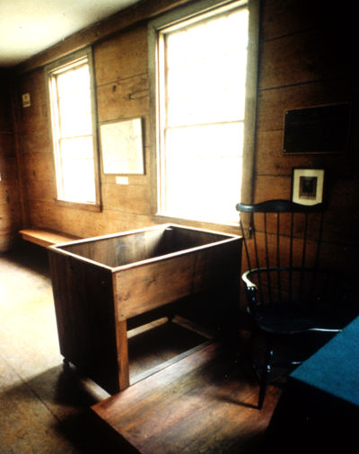

Martha Ballard's Story
Chapter 14
The Supreme Judicial Court hears the case in Pownalboro
In July of 1790, Martha and Ephraim Ballard traveled down the Kennebec River for the trial of Judge Joseph North before the Supreme Judicial Court. As they traveled downriver, the four honorable judges of the court traveled upriver from Boston to preside at Pownalboro's imposing, three-story courthouse.
| Although we don't know what Martha and Ephraim Ballard or Isaac and Rebecca Foster looked like, there are surviving portraits of the Supreme Judicial Court judges. |
This was the first time Martha had left the Hallowell/Augusta area since her arrival twelve years earlier. Ephraim had sat on juries, attended other trials at the courthouse, and done business in Pownalboro. Martha mentions his trips in her diary. But this was her first visit to Pownalboro.
In her entries from July 6 through 10, Martha reports that she "went on board Leut Pollards Boat" to Pownalboro and that she "atended Coart" on Wednesday, Thursday, and Friday, listening to other cases on the docket. On Saturday, "the Cause between this Common welth & J. North Esqu was tried & given to the jury."

| previous |
Rebecca Foster has a child | |
| next |
On Monday, the verdict came down. |
| Pownalboro Courthouse photographs Kahn-Leavitt, Laurie 1993 |
View Frames version |
| Exterior | Courtroom | Witness Box | ||
 |
 |
 |
|
|
Witness Box |
|
|
 |
||